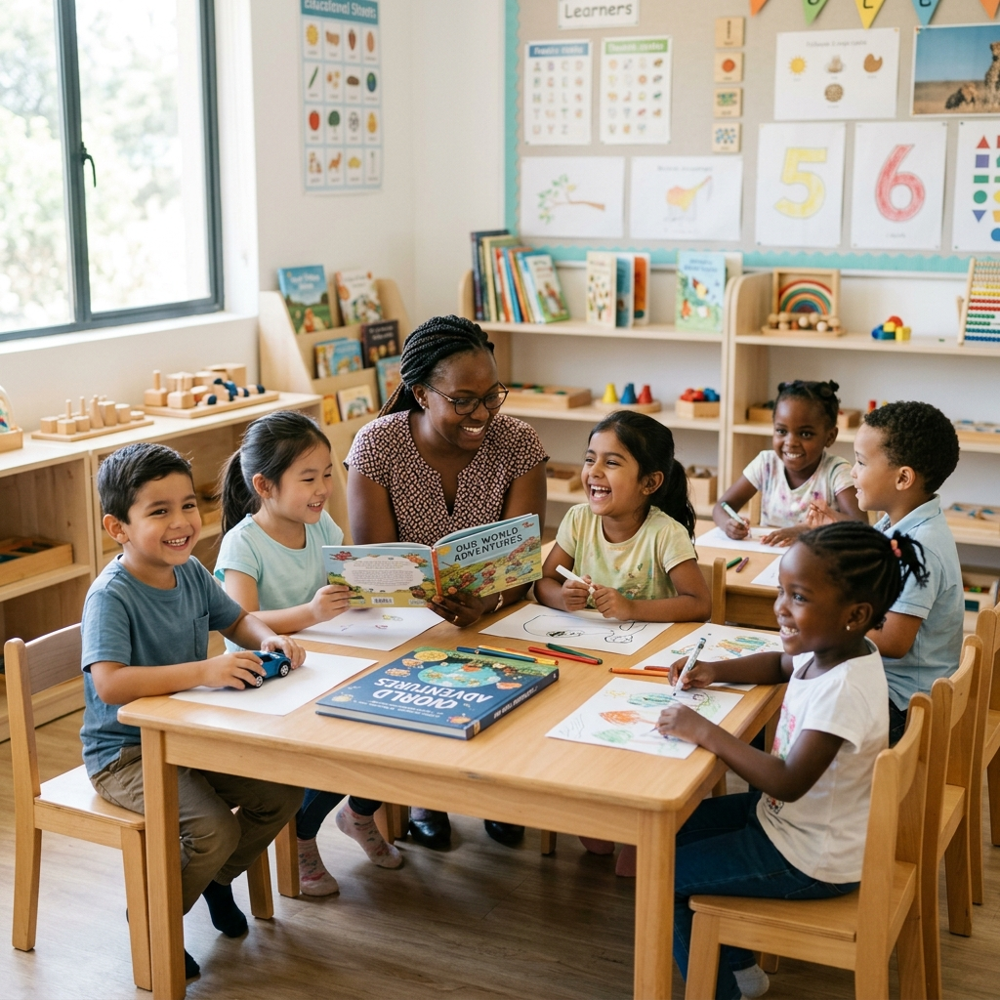
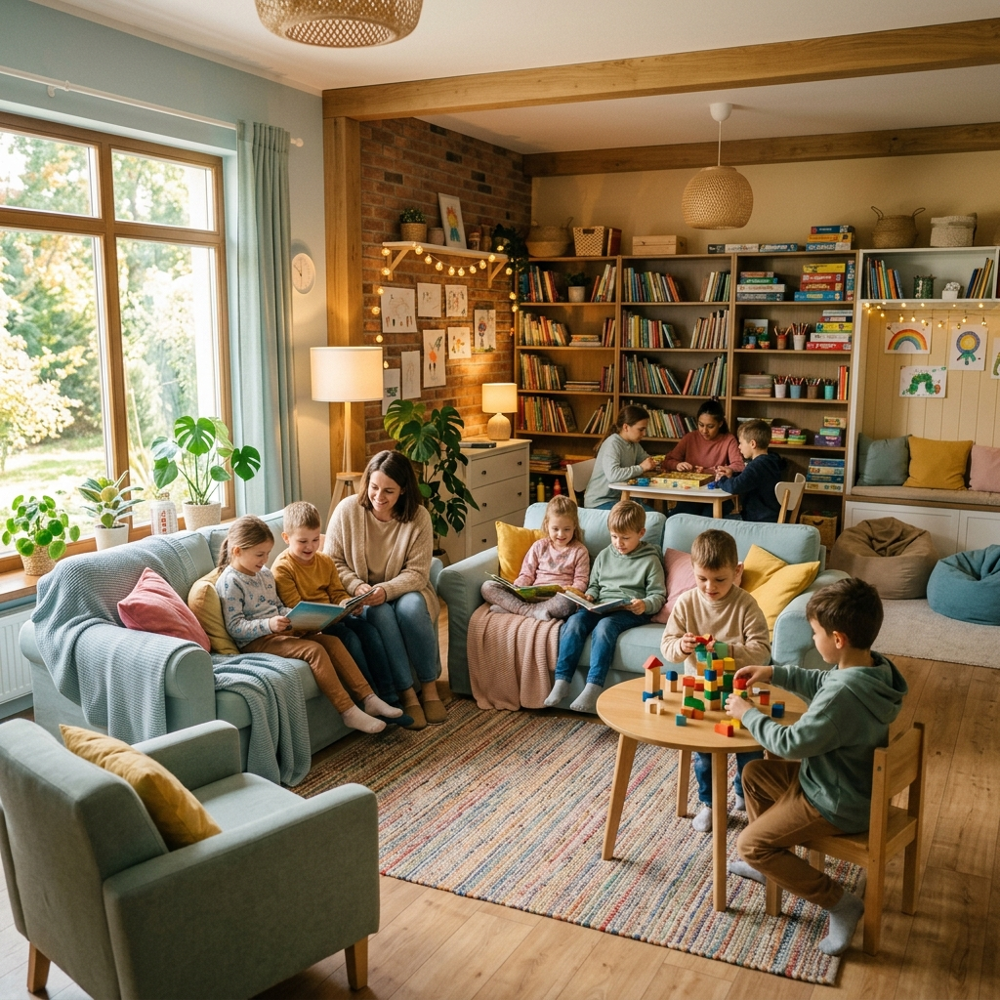

Make a Donation
Bank Mandiri
Bank Account: XXXX-XXXX-XXXX-XXXX
a. n. YAYASAN BENIH HARAPAN

Bank BNI
Bank Account: XXXX-XXXX-XXXX-XXXX
a. n. YAYASAN BENIH HARAPAN
Spreading Love, Hope, and a Better Future for Every Child.
A nurturing haven where dreams take root and futures bloom.

Seeds of Hope Orphanage is more than just a shelter; it's a family where every child is seen, heard, and loved. We focus on providing a holistic environment that nurtures not only their physical needs but also their emotional and creative spirits.
By creating a safe space for learning and play, we empower our children to overcome their past and look forward to a future filled with possibilities.

Our facility is designed to feel like a true home. From cozy common areas to vibrant learning spaces, every corner is crafted to inspire growth. We believe that a stable environment is the foundation for success.
Through community support and dedicated care, we've built a sanctuary where children can rediscover their joy and build lifelong bonds with their peers and mentors.
Bank Mandiri
Bank Account: XXXX-XXXX-XXXX-XXXX
a. n. YAYASAN BENIH HARAPAN
Bank BNI
Bank Account: XXXX-XXXX-XXXX-XXXX
a. n. YAYASAN BENIH HARAPAN
We'd love to hear from you. Drop us a message, email, or visit our orphanage location to share your love!